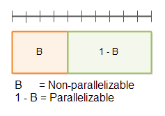
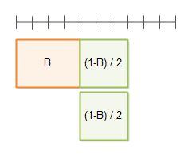
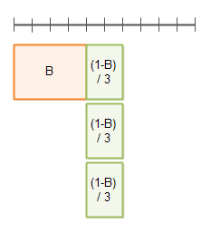

- Java Concurrency / Multithreading Tutorial
- Multithreading Benefits
- Multithreading Costs
- Concurrency Models
- Same-threading
- Concurrency vs. Parallelism
- Creating and Starting Java Threads
- Race Conditions and Critical Sections
- Thread Safety and Shared Resources
- Thread Safety and Immutability
- Java Memory Model
- Java Synchronized Blocks
- Java Volatile Keyword
- Java ThreadLocal
- Thread Signaling
- Deadlock
- Deadlock Prevention
- Starvation and Fairness
- Nested Monitor Lockout
- Slipped Conditions
- Locks in Java
- Read / Write Locks in Java
- Reentrance Lockout
- Semaphores
- Blocking Queues
- Thread Pools
- Compare and Swap
- Anatomy of a Synchronizer
- Non-blocking Algorithms
- Amdahl's Law
- Java Concurrency References
Amdahl's Law
Jakob Jenkov |
Amdahl's law can be used to calculate how much a computation can be sped up by running part of it in parallel. Amdahl's law is named after Gene Amdahl who presented the law in 1967. Most developers working with parallel or concurrent systems have an intuitive feel for potential speedup, even without knowing Amdahl's law. Regardless, Amdahl's law may still be useful to know.
I will first explain Amdahl's law mathematically, and then proceed to illustrate Amdahl's law using diagrams.
Amdahl's Law Defined
A program (or algorithm) which can be parallelized can be split up into two parts:
- A part which cannot be parallelized
- A part which can be parallelized
Imagine a program that processes files from disk. A small part of that program may scan the directory and create a list of files internally in memory. After that, each file is passed to a separate thread for processing. The part that scans the directory and creates the file list cannot be parallelized, but processing the files can.
The total time taken to execute the program in serial (not in parallel) is called T. The time T includes the time of both the non-parallelizable and parallelizable parts. The non-parallelizable part is called B. The parallizable part is referred to as T - B. The following list sums up these definitions:
- T = Total time of serial execution
- B = Total time of non-parallizable part
- T - B = Total time of parallizable part (when executed serially, not in parallel)
From this follows that:
T = B + (T-B)
It may look a bit strange at first that the parallelizable part of the program does not have its own symbol in the equation. However, since the parallelizable part of the equation can be expressed using the total time T and B (the non-parallelizable part), the equation has actually been reduced conceptually, meaning that it contains less different variables in this form.
It is the parallelizable part, T - B, that can be sped up by executing it in parallel. How much it
can be sped up depends on how many threads or CPUs you apply to execute it. The number of threads or CPUs is called
N. The fastest the the parallelizable part can be executed is thus:
(T - B) / N
Another way to write this is:
(1/N) * (T - B)
Wikipedia uses this version in case you read about Amdahl's law there.
According to Amdahl's law, the total execution time of the program when the parallelizable part is executed using N threads or CPUs is thus:
T(N) = B + (T - B) / N
T(N) means total execution with with a parallelization factor of N. Thus, T could be written T(1) , meaning the total execution time with a parallelization factor of 1. Using T(1) instead of T, Amdahl's law looks like this:
T(N) = B + ( T(1) - B ) / N
It still means the same though.
A Calculation Example
To better understand Amdahl's law, let's go through a calculation example. The total time to execute a program
is set to 1. The non-parallelizable part of the programs is 40% which out of a total time of 1 is equal to 0.4 .
The parallelizable part is thus equal to 1 - 0.4 = 0.6 .
The execution time of the program with a parallelization factor of 2 (2 threads or CPUs executing the parallelizable part, so N is 2) would be:
T(2) = 0.4 + ( 1 - 0.4 ) / 2
= 0.4 + 0.6 / 2
= 0.4 + 0.3
= 0.7
Making the same calculation with a parallelization factor of 5 instead of 2 would look like this:
T(5) = 0.4 + ( 1 - 0.4 ) / 5
= 0.4 + 0.6 / 5
= 0.4 + 0.12
= 0.52
Amdahl's Law Illustrated
To better understand Amdahl's law I will try to illustrate how the law is derived.
First of all, a program can be broken up into a non-parallelizable part B, and a parallelizable part 1-B, as illustrated by this diagram:
The line with the delimiters on at the top is the total time T(1).
Here you see the execution time with a parallelization factor of 2:
Here you see the execution time with a parallelization factor of 3:
Optimizing Algorithms
From Amdahl's law it follows naturally, that the parallelizable part can be executed faster by throwing hardware at it. More threads / CPUs. The non-parallelizable part, however, can only be executed faster by optimizing the code. Thus, you can increase the speed and parallelizability of your program by optimizing the non-parallelizable part. You might even change the algorithm to have a smaller non-parallelizable part in general, by moving some of the work into the parallelizable part (if possible).
Optimizing the Sequential Part
If you optimize the sequential part of a program you can also use Amdahl's law to calculate the execution time of the program after the optimization. If the non-parallelizable part B is optimized by a factor of O, then Amdahl's law looks like this:
T(O,N) = B / O + (1 - B / O) / N
Remember, the non-parallelizable part of the program now takes B / O time, so the parallelizable
part takes 1 - B / O time.
If B is 0.4, O is 2 and N is 5, then the calculation looks like this:
T(2,5) = 0.4 / 2 + (1 - 0.4 / 2) / 5
= 0.2 + (1 - 0.4 / 2) / 5
= 0.2 + (1 - 0.2) / 5
= 0.2 + 0.8 / 5
= 0.2 + 0.16
= 0.36
Execution Time vs. Speedup
So far we have only used Amdahl's law to calculate the execution time of a program or algorithm after optimization or parallelization. We can also use Amdahl's law to calculate the speedup, meaning how much faster the new algorithm or program is than the old version.
If the time of the old version of the program or algorithm is T, then the speedup will be
Speedup = T / T(O,N)
We often set T to 1 just to calculate the execution time and speedup as a fraction of the old time. The equation then looks like this:
Speedup = 1 / T(O,N)
If we insert the Amdahl's law calculation instead of T(O,N), we get the following formula:
Speedup = 1 / ( B / O + (1 - B / O) / N )
With B = 0.4, O = 2 and N = 5, the calculation becomes:
Speedup = 1 / ( 0.4 / 2 + (1 - 0.4 / 2) / 5)
= 1 / ( 0.2 + (1 - 0.4 / 2) / 5)
= 1 / ( 0.2 + (1 - 0.2) / 5 )
= 1 / ( 0.2 + 0.8 / 5 )
= 1 / ( 0.2 + 0.16 )
= 1 / 0.36
= 2.77777 ...
That means, that if you optimize the non-parallelizable (sequential) part by a factor of 2, and paralellize the parallelizable part by a factor of 5, the new optimized version of the program or algorithm would run a maximum of 2.77777 times faster than the old version.
Measure, Don't Just Calculate
While Amdahl's law enables you to calculate the theoretic speedup of parallelization of an algorithm, don't rely too heavily on such calculations. In practice, many other factors may come into play when you optimize or parallelize an algorithm.
The speed of memory, CPU cache memory, disks, network cards etc. (if disk or network are used) may be a limiting factor too. If a new version of the algorithm is parallelized, but leads to a lot more CPU cache misses, you may not even get the desired x N speedup of using x N CPUs. The same is true if you end up saturating the memory bus, disk or network card or network connection.
My recommendation would be to use Amdahl's law to get an idea about where to optimize, but use a measurement to determine the real speedup of the optimization. Remember, sometimes a highly serialized sequential (single CPU) algorithm may outperform a parallel algorithm, simply because the sequential version has no coordination overhead (breaking down work and building the total again), and because a single CPU algorithm may conform better with how the underlying hardware works (CPU pipelines, CPU cache etc).
| Tweet | |
Jakob Jenkov | |